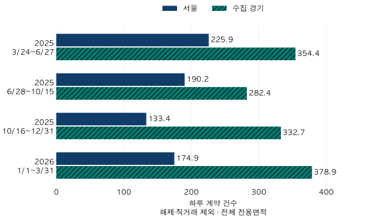

정책 경계와 거래 읽기 · 경기 거래 변화
6·27 이후 경기 아파트 거래, 건수와 가격대는 어떻게 달라졌을까?
2025년 6·27 이후 서울·수집 경기의 하루 계약과 다섯 가격대 비중을 같은 기준으로 비교합니다. 2026년 1분기 후속 흐름, 61지역 차이와 28·84일 민감도를 통해 정책 효과로 단정할 수 없는 한계를 확인합니다.
분석 기간 · 2025.3.24~2026.3.31 · 4개 비교 구간 | 보유 자료 스냅샷 생성 · 자료 2026-10-04 · 집계 2026-10-10
6·27 대출 규제 뒤 경기도에서는 거래가 줄고 저가 아파트로 쏠렸을까요? 수집 경기의 2025년 6월 28일~10월 15일 하루 평균 계약은 앞 구간보다 20.3% 줄었습니다. 그런데 6억 이하 거래 비중도 57.1%에서 53.3%로 낮아졌습니다. 거래 감소와 저가 쏠림은 같은 말이 아닙니다. 어느 기간을 나란히 놓았는지, 비중과 실제 계약 건수를 함께 확인해야 합니다.
6억 원 대출한도와 6억 원짜리 집은 다릅니다
금융위원회의 2025년 6월 27일 발표는 수도권·규제지역의 주택구입 목적 주택담보대출에 최대 6억 원 한도를 두는 조치 등을 담았고, 해당 한도의 시행일은 6월 28일이었습니다. 이는 ‘6억 원 초과 주택은 대출을 받을 수 없다’는 의미가 아닙니다. 실제 대출금액에는 소득·기존 부채 등 다른 조건도 작용합니다.
당시 FAQ의 경과규정은 시행 전 전산상 신청접수, 매매계약과 계약금 납부 등 종전 규정 적용 조건도 설명합니다. 10월의 추가 대책 FAQ 역시 신청 시점의 심사시가와 경과조건을 구분합니다. 여기서 나누는 실거래가격은 대출심사의 시가가 아니고, 자료에는 각 매수자의 실제 대출·신청일·경과조건이 없습니다. 현재 받을 수 있는 대출한도를 안내하는 글도 아닙니다.
분석 대상은 서울 25개 구와 수집 경기 36개 시·구의 아파트 매매입니다. 전체 전용면적에서 해제·직거래를 제외하는 관측 기준을 사용했습니다. 인천과 미수집 경기 지역은 포함하지 않습니다. 기존 서울 가격대 글의 계약·가격대 정의를 유지해 경기와 비교했으며, 같은 서울 숫자는 다시 대조했습니다.
2025년 3월 24일~6월 27일, 6월 28일~10월 15일, 10월 16일~12월 31일과 후속 2026년 1분기를 봅니다. 첫 구간의 시작일은 서울편과의 비교 기준입니다. 경기 전체가 그날 같은 규제를 새로 받았다는 뜻은 아닙니다. 각 구간에 여러 정책과 시장 변화가 함께 있으므로 한 조치만의 전후 실험으로 보지 않습니다.
규제 뒤 서울과 경기는 같은 경로로 움직였을까요?
네 구간의 길이는 96일·110일·77일·90일로 다릅니다. 원 건수만 비교하면 긴 구간이 유리하므로 계약 건수를 달력일수로 나눈 하루 평균을 함께 봅니다. 주말과 공휴일도 날짜 수에 포함합니다.

| 지역·기간 | 달력일 | 계약 건수 | 하루 건수 |
|---|---|---|---|
| 서울 25구 · 2025.3.24~6.27 | 96 | 21,687 | 225.91 |
| 서울 25구 · 2025.6.28~10.15 | 110 | 20,919 | 190.17 |
| 서울 25구 · 2025.10.16~12.31 | 77 | 10,270 | 133.38 |
| 서울 25구 · 2026.1.1~3.31 | 90 | 15,743 | 174.92 |
| 수집 경기 36지역 · 2025.3.24~6.27 | 96 | 34,020 | 354.38 |
| 수집 경기 36지역 · 2025.6.28~10.15 | 110 | 31,059 | 282.35 |
| 수집 경기 36지역 · 2025.10.16~12.31 | 77 | 25,619 | 332.71 |
| 수집 경기 36지역 · 2026.1.1~3.31 | 90 | 34,097 | 378.86 |
첫 두 구간을 비교하면 서울은 하루 225.91건에서 190.17건으로 15.8%, 수집 경기는 354.38건에서 282.35건으로 20.3% 감소했습니다. 이후 경기의 하루 건수는 연말 332.71건, 2026년 1분기 378.86건으로 늘었습니다. 마지막 값은 첫 구간보다 6.9% 높습니다.
서울은 연말에 133.38건으로 더 낮아진 뒤 2026년 1분기 174.92건으로 늘었지만, 첫 구간보다는 22.6% 낮았습니다. 같은 정책 시기에 두 지역이 함께 줄었다는 사실과, 그 이후 경로까지 같았다는 주장은 구분해야 합니다. 거래된 지역·주택 구성이나 다른 시장 조건이 바뀐 가능성도 남습니다.
경기는 6억 이하 거래로 쏠렸을까요?
가격대는 기존 서울편과 같은 다섯 구간입니다. 경계의 ‘이하’에는 정확히 그 가격인 계약이 들어갑니다. 아래 표의 각 칸은 그 구간 전체에서의 비중 / 하루 계약 건수입니다. 비중이 올라도 건수가 늘지 않을 수 있습니다.
| 실거래가격 | 25.3.24~6.27 | 25.6.28~10.15 | 25.10.16~12.31 | 26.1.1~3.31 |
|---|---|---|---|---|
| 6억 이하 | 57.10% / 202.36건 | 53.35% / 150.63건 | 57.59% / 191.61건 | 56.92% / 215.66건 |
| 6억 초과~9억 이하 | 25.93% / 91.88건 | 26.87% / 75.88건 | 28.55% / 94.99건 | 27.57% / 104.44건 |
| 9억 초과~15억 이하 | 13.00% / 46.07건 | 15.87% / 44.82건 | 12.12% / 40.32건 | 13.25% / 50.19건 |
| 15억 초과~25억 이하 | 3.63% / 12.86건 | 3.49% / 9.86건 | 1.60% / 5.32건 | 2.11% / 8.00건 |
| 25억 초과 | 0.34% / 1.20건 | 0.41% / 1.16건 | 0.14% / 0.47건 | 0.15% / 0.57건 |
6억 이하의 첫 두 구간 비중은 57.10%에서 53.35%로 낮아졌습니다. 하루 계약도 202.36건에서 150.63건으로 감소했습니다. 이 기간 비교에서는 저가 쏠림보다 전체 건수 감소 속 가격대별 감소 폭의 차이가 드러납니다.
9억 초과~15억 이하에서는 비중이 13.00%에서 15.87%로 올랐지만 하루 건수는 46.07건에서 44.82건으로 줄었습니다. 비중만 보고 해당 예산대의 거래가 늘었다고 말하면 방향을 잘못 읽게 됩니다. 다섯 가격대 모두 첫 두 구간의 하루 건수는 감소했습니다. 25억 초과의 원 건수는 115건에서 128건으로 늘었지만, 기간도 96일에서 110일로 길어져 하루 건수는 1.20건에서 1.16건으로 낮아졌습니다.
이후 경기 전체 건수가 늘었다고 모든 가격대가 첫 구간 수준을 회복한 것도 아닙니다. 2026년 1분기의 15억 초과 계약을 합치면 하루 약 8.57건으로, 첫 구간의 14.06건보다 적습니다. ‘경기 거래 회복’이라는 광역 숫자를 내 예산대에 그대로 적용하기 전에 가격대별 표를 확인할 이유입니다.
동일한 기준의 서울 가격대 표도 비교하기
| 실거래가격 | 25.3.24~6.27 | 25.6.28~10.15 | 25.10.16~12.31 | 26.1.1~3.31 |
|---|---|---|---|---|
| 6억 이하 | 16.73% / 37.80건 | 16.90% / 32.15건 | 18.04% / 24.06건 | 22.08% / 38.62건 |
| 6억 초과~9억 이하 | 24.48% / 55.29건 | 24.60% / 46.78건 | 24.50% / 32.68건 | 28.30% / 49.50건 |
| 9억 초과~15억 이하 | 34.06% / 76.94건 | 35.72% / 67.93건 | 31.29% / 41.73건 | 30.94% / 54.12건 |
| 15억 초과~25억 이하 | 18.11% / 40.92건 | 17.53% / 33.34건 | 17.17% / 22.90건 | 13.53% / 23.67건 |
| 25억 초과 | 6.62% / 14.96건 | 5.25% / 9.98건 | 9.01% / 12.01건 | 5.15% / 9.01건 |
‘규제 뒤 감소율’은 기간을 바꾸면 얼마나 달라질까요?
첫 비교의 앞뒤 길이가 다르다는 점을 더 확인하려고, 6월 28일을 경계로 바로 앞·뒤의 28일과 84일도 따로 비교했습니다. 28일은 각 요일이 네 번, 84일은 열두 번 들어갑니다. 두 창은 길이와 요일 수가 같지만, 공휴일이나 계절·시장 국면까지 같은 것은 아닙니다. 발표일인 6월 27일은 앞 기간에 들어갑니다.
| 지역·연도·앞뒤 길이 | 직전 하루 건수 | 직후 하루 건수 | 변화율 |
|---|---|---|---|
| 서울 25구 · 2024년 · 28일 | 227.50 | 275.04 | 20.89% |
| 서울 25구 · 2024년 · 84일 | 174.23 | 201.52 | 15.67% |
| 서울 25구 · 2025년 · 28일 | 352.93 | 128.82 | -63.50% |
| 서울 25구 · 2025년 · 84일 | 236.87 | 140.98 | -40.48% |
| 수집 경기 36지역 · 2024년 · 28일 | 354.93 | 410.79 | 15.74% |
| 수집 경기 36지역 · 2024년 · 84일 | 296.81 | 327.76 | 10.43% |
| 수집 경기 36지역 · 2025년 · 28일 | 489.86 | 227.43 | -53.57% |
| 수집 경기 36지역 · 2025년 · 84일 | 363.00 | 244.89 | -32.54% |
2025년 경기의 감소율은 28일 창에서 53.6%, 84일 창에서는 32.5%입니다. 앞서 정책 구간 전체를 비교한 20.3%와도 다릅니다. 짧은 창이 담은 직전의 높은 거래와 직후의 낮은 거래를, 이후 몇 달까지 계속되는 비율로 옮겨 쓰면 안 됩니다.
2024년의 같은 기준일 앞뒤에서는 거래가 증가했습니다. 이는 ‘해마다 이때 감소한다’는 설명을 점검하는 참고이지만, 2024년이 2025년의 정책 없는 세상을 대신해 주지는 않습니다. 서울 역시 같은 수도권 정책 환경에 있으므로 경기의 미처치 대조군이 아닙니다. 두 해의 차이를 빼거나 서울과의 차이를 곧바로 규제 효과라고 부르지 않았습니다.
경기 36개 지역 모두 같은 변화였을까요?
첫 두 구간의 하루 계약은 수집 경기 36지역 중 33지역에서 감소했습니다. 서울은 25구 중 21구였습니다. 광역 평균과 다른 지역도 있으므로 모든 동네가 같은 방향이었다고 단정하지 않습니다. 아래 표는 지역 코드순이며, 각 칸은 하루 건수와 괄호 안 원 건수입니다.
수집 경기 36지역의 모든 구간 보기
| 지역 | 25.3.24~6.27 | 25.6.28~10.15 | 25.10.16~12.31 | 26.1.1~3.31 | 첫 두 구간 변화 |
|---|---|---|---|---|---|
| 수원시 장안구 | 7.50 (720건) | 5.78 (636건) | 4.26 (328건) | 7.47 (672건) | -22.91% |
| 수원시 권선구 | 10.16 (975건) | 7.15 (786건) | 14.14 (1,089건) | 13.67 (1,230건) | -29.64% |
| 수원시 팔달구 | 5.48 (526건) | 5.09 (560건) | 4.13 (318건) | 7.20 (648건) | -7.09% |
| 수원시 영통구 | 17.42 (1,672건) | 15.80 (1,738건) | 12.38 (953건) | 15.94 (1,435건) | -9.28% |
| 성남시 수정구 | 4.56 (438건) | 5.61 (617건) | 2.36 (182건) | 3.52 (317건) | 22.94% |
| 성남시 중원구 | 5.45 (523건) | 4.98 (548건) | 2.65 (204건) | 4.96 (446건) | -8.56% |
| 성남시 분당구 | 24.25 (2,328건) | 17.05 (1,875건) | 6.42 (494건) | 9.21 (829건) | -29.71% |
| 의정부시 | 13.72 (1,317건) | 10.12 (1,113건) | 12.09 (931건) | 14.20 (1,278건) | -26.25% |
| 안양시 만안구 | 5.89 (565건) | 4.53 (498건) | 7.91 (609건) | 8.89 (800건) | -23.08% |
| 안양시 동안구 | 18.02 (1,730건) | 15.30 (1,683건) | 9.44 (727건) | 14.04 (1,264건) | -15.10% |
| 부천시 원미구 | 8.26 (793건) | 6.60 (726건) | 11.65 (897건) | 11.08 (997건) | -20.10% |
| 부천시 소사구 | 4.54 (436건) | 3.52 (387건) | 5.45 (420건) | 5.82 (524건) | -22.54% |
| 부천시 오정구 | 1.45 (139건) | 1.12 (123건) | 1.21 (93건) | 1.48 (133건) | -22.77% |
| 광명시 | 12.38 (1,188건) | 13.33 (1,466건) | 7.96 (613건) | 10.60 (954건) | 7.70% |
| 평택시 | 17.33 (1,664건) | 12.83 (1,411건) | 17.00 (1,309건) | 20.00 (1,800건) | -26.00% |
| 안산시 상록구 | 4.12 (396건) | 3.32 (365건) | 4.51 (347건) | 5.18 (466건) | -19.56% |
| 안산시 단원구 | 6.79 (652건) | 4.99 (549건) | 7.01 (540건) | 7.63 (687건) | -26.51% |
| 고양시 덕양구 | 12.39 (1,189건) | 7.93 (872건) | 12.56 (967건) | 13.34 (1,201건) | -36.00% |
| 고양시 일산동구 | 5.44 (522건) | 3.97 (437건) | 6.13 (472건) | 5.68 (511건) | -26.94% |
| 고양시 일산서구 | 8.61 (827건) | 5.50 (605건) | 7.47 (575건) | 7.08 (637건) | -36.15% |
| 과천시 | 2.75 (264건) | 1.24 (136건) | 0.56 (43건) | 0.52 (47건) | -55.04% |
| 구리시 | 5.34 (513건) | 5.33 (586건) | 12.06 (929건) | 14.51 (1,306건) | -0.31% |
| 남양주시 | 19.34 (1,857건) | 14.27 (1,570건) | 22.52 (1,734건) | 24.47 (2,202건) | -26.22% |
| 군포시 | 7.49 (719건) | 5.78 (636건) | 10.84 (835건) | 12.19 (1,097건) | -22.80% |
| 의왕시 | 6.36 (611건) | 5.16 (568건) | 3.52 (271건) | 5.31 (478건) | -18.87% |
| 하남시 | 12.06 (1,158건) | 14.00 (1,540건) | 7.79 (600건) | 8.29 (746건) | 16.06% |
| 용인시 처인구 | 5.40 (518건) | 4.78 (526건) | 6.06 (467건) | 7.23 (651건) | -11.38% |
| 용인시 기흥구 | 14.99 (1,439건) | 11.64 (1,280건) | 21.42 (1,649건) | 25.02 (2,252건) | -22.37% |
| 용인시 수지구 | 23.82 (2,287건) | 18.60 (2,046건) | 13.78 (1,061건) | 18.51 (1,666건) | -21.92% |
| 파주시 | 11.73 (1,126건) | 8.02 (882건) | 11.17 (860건) | 10.58 (952건) | -31.64% |
| 김포시 | 12.42 (1,192건) | 9.90 (1,089건) | 12.05 (928건) | 13.11 (1,180건) | -20.27% |
| 화성시 만세구 | 3.57 (343건) | 2.58 (284건) | 3.77 (290건) | 3.51 (316건) | -27.74% |
| 화성시 효행구 | 4.55 (437건) | 3.04 (334건) | 4.32 (333건) | 4.69 (422건) | -33.30% |
| 화성시 병점구 | 5.95 (571건) | 4.54 (499건) | 7.48 (576건) | 7.68 (691건) | -23.73% |
| 화성시 동탄구 | 17.64 (1,693건) | 13.62 (1,498건) | 30.70 (2,364건) | 28.24 (2,542건) | -22.78% |
| 광주시 | 7.21 (692건) | 5.36 (590건) | 7.94 (611건) | 8.00 (720건) | -25.59% |
서울 25개 구의 동일 구간 보기
| 지역 | 25.3.24~6.27 | 25.6.28~10.15 | 25.10.16~12.31 | 26.1.1~3.31 | 첫 두 구간 변화 |
|---|---|---|---|---|---|
| 종로구 | 1.91 (183건) | 1.67 (184건) | 1.17 (90건) | 1.60 (144건) | -12.25% |
| 중구 | 3.78 (363건) | 3.01 (331건) | 1.74 (134건) | 2.48 (223건) | -20.42% |
| 용산구 | 2.21 (212건) | 2.76 (304건) | 3.19 (246건) | 2.59 (233건) | 25.15% |
| 성동구 | 14.78 (1,419건) | 9.83 (1,081건) | 3.03 (233건) | 3.66 (329건) | -33.52% |
| 광진구 | 6.97 (669건) | 5.21 (573건) | 1.73 (133건) | 1.96 (176건) | -25.25% |
| 동대문구 | 10.07 (967건) | 10.79 (1,187건) | 5.83 (449건) | 7.82 (704건) | 7.13% |
| 중랑구 | 5.26 (505건) | 4.77 (525건) | 4.16 (320건) | 6.43 (579건) | -9.27% |
| 성북구 | 12.69 (1,218건) | 11.39 (1,253건) | 8.09 (623건) | 11.77 (1,059건) | -10.22% |
| 강북구 | 3.40 (326건) | 3.10 (341건) | 2.70 (208건) | 4.53 (408건) | -8.71% |
| 도봉구 | 5.66 (543건) | 4.89 (538건) | 3.39 (261건) | 6.58 (592건) | -13.53% |
| 노원구 | 16.76 (1,609건) | 14.81 (1,629건) | 11.12 (856건) | 21.48 (1,933건) | -11.64% |
| 은평구 | 7.25 (696건) | 7.71 (848건) | 5.75 (443건) | 9.56 (860건) | 6.33% |
| 서대문구 | 10.03 (963건) | 7.57 (833건) | 6.10 (470건) | 7.52 (677건) | -24.51% |
| 마포구 | 14.17 (1,360건) | 9.74 (1,071건) | 4.21 (324건) | 4.76 (428건) | -31.27% |
| 양천구 | 11.76 (1,129건) | 8.02 (882건) | 6.55 (504건) | 7.20 (648건) | -31.82% |
| 강서구 | 12.85 (1,234건) | 13.04 (1,434건) | 7.52 (579건) | 11.67 (1,050건) | 1.42% |
| 구로구 | 9.91 (951건) | 8.47 (932건) | 6.69 (515건) | 11.20 (1,008건) | -14.47% |
| 금천구 | 2.44 (234건) | 2.36 (260건) | 1.86 (143건) | 3.49 (314건) | -3.03% |
| 영등포구 | 14.18 (1,361건) | 10.85 (1,193건) | 5.91 (455건) | 8.90 (801건) | -23.50% |
| 동작구 | 14.22 (1,365건) | 9.89 (1,088건) | 4.42 (340건) | 6.19 (557건) | -30.44% |
| 관악구 | 6.45 (619건) | 6.32 (695건) | 4.09 (315건) | 6.24 (562건) | -2.01% |
| 서초구 | 4.66 (447건) | 4.05 (446건) | 6.42 (494건) | 4.31 (388건) | -12.92% |
| 강남구 | 7.92 (760건) | 6.31 (694건) | 7.44 (573건) | 5.44 (490건) | -20.31% |
| 송파구 | 10.67 (1,024건) | 9.37 (1,031건) | 14.45 (1,113건) | 9.27 (834건) | -12.13% |
| 강동구 | 15.94 (1,530건) | 14.24 (1,566건) | 5.83 (449건) | 8.29 (746건) | -10.67% |
내 예산대의 뉴스를 읽을 때는 세 가지를 함께 적습니다
- 기간과 날짜 기준. 정책 발표 뒤 며칠인지, 계약일인지 신고일인지, 뒤늦은 신고·정정이 반영된 자료인지 확인합니다.
- 비중과 하루 건수. 예산대의 비중이 올랐다는 사실과 실제 계약 활동이 늘었다는 사실을 따로 기록합니다.
- 같은 조건의 후속 결과. 전체 경기 평균만 보지 않고 관심 지역·가격대가 다음 기간에도 같은 방향인지 확인합니다. 실제 매물이나 대출 조건은 별도 근거가 필요합니다.
6·27 이후 경기의 계약 활동은 처음 줄었지만, 저가 비중과 후속 경로까지 한 문장으로 요약되지는 않았습니다. 다음에는 같은 달의 여러 해 평균과 비교해 한 구간만 고른 인상을 줄일 수 있습니다. 15억·25억 경계 주변의 분포는 광역 가격대 비중과 다른 질문을 다룹니다.
원 건수·월별 경로·검증과 출처 확인하기
국토부 아파트 매매 실거래 상세 자료의 정제된 계약을 사용했습니다. 현재 단지 목록의 서울25구·수집경기36지역, 전체 전용면적, 양수 가격·면적, 해제·직거래·토지임대부 제외의 관측 기준(strict)입니다. 새 정책 연구모형이나 대출 대상자 추정 집합을 사용하지 않았습니다.
스냅샷 생성일 2026-10-04, 공식 설명 확인·집계일 2026-10-10. 2024~2026년1분기의 과거 계약을 현재 자료에서 다시 센 것이며 정확한 정보 가용 시점은 확인되지 않습니다. 최신 월의 잠정치를 확정값으로 보정하지 않았고, 정책 전에 알려진 정보만으로 만든 빈티지도 아닙니다. 공휴일·금리·다른 정책·거래 구성의 변화를 통제한 인과효과는 없습니다.
414,355개 원천 필드 기반 계약의 날짜·분류를 재구성했고, SQL의 지역·일·가격대 집계와 비교했습니다. 주기간40가격셀의 건수·일수·비중·일평균, 기존 서울20가격셀과 전세 계절 글에 쓴 매매24개월을 대조했습니다. 원천 파일과 데이터베이스의 읽기 전후 식별정보도 확인했습니다. 별도 모형용 매매 포함 기준과는 작은 차감 셀이 있어 그 민감도 숫자는 공동 미공개했습니다. 주표의 관측 정의는 바꾸지 않았습니다.
양수 공개 셀은10건 이상이며, 기간·월합계의 겹치는 경계와 기존 상반기에서1분기를 뺀 보완기간도 검사했습니다. 단지·개인 식별자는 공개하지 않습니다. 원 계산값과 같은 길이 비교의 정확한 날짜는 공개 집계 JSON에 있습니다.
가격대별 원 계약 건수
| 지역·가격대 | 25.3.24~6.27 | 25.6.28~10.15 | 25.10.16~12.31 | 26.1.1~3.31 |
|---|---|---|---|---|
| 서울 25구 · 6억 이하 | 3,629 | 3,536 | 1,853 | 3,476 |
| 서울 25구 · 6억 초과~9억 이하 | 5,308 | 5,146 | 2,516 | 4,455 |
| 서울 25구 · 9억 초과~15억 이하 | 7,386 | 7,472 | 3,213 | 4,871 |
| 서울 25구 · 15억 초과~25억 이하 | 3,928 | 3,667 | 1,763 | 2,130 |
| 서울 25구 · 25억 초과 | 1,436 | 1,098 | 925 | 811 |
| 수집 경기 36지역 · 6억 이하 | 19,427 | 16,569 | 14,754 | 19,409 |
| 수집 경기 36지역 · 6억 초과~9억 이하 | 8,820 | 8,347 | 7,314 | 9,400 |
| 수집 경기 36지역 · 9억 초과~15억 이하 | 4,423 | 4,930 | 3,105 | 4,517 |
| 수집 경기 36지역 · 15억 초과~25억 이하 | 1,235 | 1,085 | 410 | 720 |
| 수집 경기 36지역 · 25억 초과 | 115 | 128 | 36 | 51 |
2025년부터 2026년1분기까지 월별 전체 경로
| 계약월 | 서울25구 | 수집경기36지역 |
|---|---|---|
| 2025-01 | 98.06 (3,040건) | 153.55 (4,760건) |
| 2025-02 | 208.86 (5,848건) | 270.21 (7,566건) |
| 2025-03 | 284.23 (8,811건) | 340.16 (10,545건) |
| 2025-04 | 150.80 (4,524건) | 285.63 (8,569건) |
| 2025-05 | 208.03 (6,449건) | 320.81 (9,945건) |
| 2025-06 | 332.20 (9,966건) | 463.67 (13,910건) |
| 2025-07 | 116.39 (3,608건) | 214.39 (6,646건) |
| 2025-08 | 119.45 (3,703건) | 220.45 (6,834건) |
| 2025-09 | 266.93 (8,008건) | 372.10 (11,163건) |
| 2025-10 | 252.55 (7,829건) | 393.94 (12,212건) |
| 2025-11 | 105.43 (3,163건) | 316.10 (9,483건) |
| 2025-12 | 139.71 (4,331건) | 306.52 (9,502건) |
| 2026-01 | 165.19 (5,121건) | 388.13 (12,032건) |
| 2026-02 | 195.68 (5,479건) | 361.32 (10,117건) |
| 2026-03 | 165.90 (5,143건) | 385.42 (11,948건) |
분석·집필: 파파펭귄 (Nobot Kang). 에이전트로 원천 대조·계산·초안 검토를 보조했습니다.